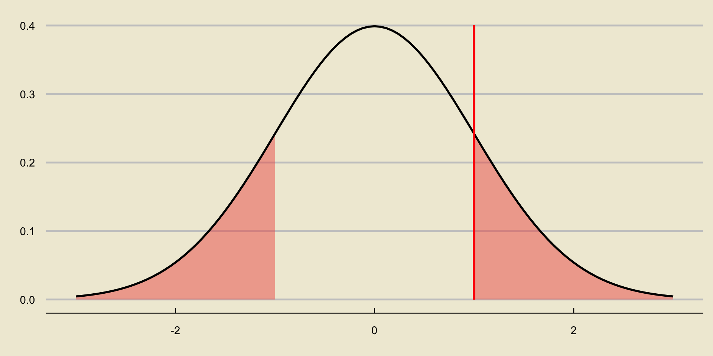

graph TB
A[Is the population Normal? . ] --> |Yes| B{{Use Normal .}}
A --> |No| C[Is n >= 30? .]
C --> |Yes| D[sigma or s? .]
C --> |No| E{{cannot proceed .}}
D --> |sigma| F{{Use Normal .}}
D --> |s| G{{Use t }}
PSTAT 5A: Lecture 17
Hypothesis Testing, Part II
Mallory Wang
2024-07-15
Hypothesis Testing for the Mean
Recap
Before the second midterm, we discussed Hypothesis Testing on population proportions.
That is: given a population with true proportion \(p\), we took samples and tried to use the data collected in these samples to assess the validity of the claim \(H_0: \ p = p_0\) (for some fixed value \(p_0\)) against some alternative hypothesis (two-sided, lower-tailed, or upper-tailed)
Indeed, we can conduct hypothesis testing on any population parameter.
One parameter of interest to statisticians is the population mean \(\mu\).
Hypothesis Testing for the Mean
The classification of tests doesn’t change much: we still have two-sided, lower-tailed and upper-tailed tests for the mean.
More specifically, if our null is \(H_0: \ \mu = \mu_0\) then:
- A two-sided alternative is \(H_A: \ \mu \neq \mu_0\)
- A lower-tailed alternative is \(H_A: \ \mu < \mu_0\)
- An upper-tailed alternative is \(H_A: \ \mu > \mu_0\)
- A simple-vs-simple alternative is \(H_A: \ \mu = \mu_1\) for some \(\mu_1 \neq \mu_0\)
Hypothesis Testing for the Mean
Our testing procedure will be similar to that of hypothesis tests for a proportion: we compute a test statistic, and then compare this value of the test statistic to a critical value that is determined by both the distribution of the test statistic under the null as well as the significance level \(\alpha\).
Let’s focus on a two-sided test for now.
Our test statistic will certainly involve \(\overline{X}\), the sample mean.
- Specifically, it will be some standardized version of \(\overline{X}\).
- However, exactly how we standardize will be dependent upon the sampling distribution of \(\overline{X}\).
Sampling Distribution of \(\overline{X}\)
Test Statistic
What this means is that our test statistic itself will take different forms depending on the information that is provided.
Specifically, we have \[ \mathrm{TS} = \begin{cases} \displaystyle \frac{\overline{X} - \mu_0}{\sigma / \sqrt{n}} & \text{if } \quad \begin{array}{rl} \bullet & \text{pop. is normal, OR} \\ \bullet & \text{$n \geq 30$ AND $\sigma$ is known} \end{array} \quad \stackrel{H_0}{\sim} \mathcal{N}(0, \ 1) \\[5mm] \displaystyle \frac{\overline{X} - \mu_0}{s / \sqrt{n}} & \text{if } \quad \begin{array}{rl} \bullet & \text{$n \geq 30$ AND $\sigma$ is not known} \end{array} \quad \stackrel{H_0}{\sim} t_{n - 1} \end{cases} \]
Test Statistic
In the two-sided case, our critical value will still be the value \(c\) that ensures \[ \mathbb{P}(|\mathrm{TS}| > c) = \alpha \] (i.e. we reject \(H_0\) whenever \(\overline{X}\) is far away from \(\mu_0\)) meaning \(c\) will the \((\alpha /2) \times 100\%\) percentile, scaled by negative 1, of either the standard normal distribution or the \(t_{n - 1}\) distribution.
- Again, don’t forget about how the symmetry of the normal and t-distributions translates to relationships between percentiles!
Our test in the two-sided case will then take the form \[ \texttt{decision}(\mathrm{TS}) = \begin{cases} \texttt{reject } H_0 & \text{if } |\mathrm{TS}| > c \\ \texttt{fail to reject } H_0 & \text{otherwise}\\ \end{cases} \]
Let’s do an example.
Worked-Out Example
Worked-Out Example 1
An article published by the US Census claims that in 2019 the average American took around 27.6 minutes to commute to work. To test this claim, Jenny took a representative sample of 101 Americans in 2019 and observed that these individuals had a combined average commute time of around 20.1 minutes and a standard deviation of around 12.4 minutes.
Use the information from Jenny’s sample, along with an \(\alpha = 0.05\) level of significance, to test the claim that the average commute time is 27.6 minutes against a two-sided alternative.
Solutions
It’s a good idea to first determine which distribution we need to use.
Is the population normally distributed?
In other words, are the commute times of all Americans normally distributed?
No; or, at least, there is not enough inforamtion to conclude that they are.
Is our sample large enough?
- Yes; \(n = 101 \geq 30\)
Do we have \(\sigma\) or \(s\)?
- We only have \(s\), the standard devaition of commute times of Jenny’s sample.
Solutions
Therefore, what distribution are we going to use?
- The \(t_{100}\) distribution.
In other words, \[ \mathrm{TS} = \frac{\overline{X} - 27.6}{12.4 / \sqrt{101}} \stackrel{H_0}{\sim} t_{100} \]
From the \(t-\)table, we see that the critical value will be \(1.98\).
Additionally, the observed value of our test statistic (based on Jenny’s sample) is \[ \frac{20.1 - 27.6}{12.4 / \sqrt{101}} \approx -6.08 \]
Solutions
Our test rejects \(H_0\) when \(|\mathrm{TS}| > c\).
In this case, \(|\mathrm{TS}| = |-6.07| = 6.07 > 1.98\)
Therefore, we reject the null:
At an \(\alpha = 0.05\) level of significance, there was sufficient evidence to reject the Census’ claim that the average commute time of Americans was 27.6 minutes in favor of the alternative that the true average commute time was not 27.6 minutes.
One-Sided Tests
Analogously as with the hypothesis testing for proportions, the lower-tailed test of a population mean takes the form \[ \texttt{decision}(\mathrm{TS}) = \begin{cases} \texttt{reject } H_0 & \text{if } \mathrm{TS} < c \\ \texttt{fail to reject } H_0 & \text{otherwise}\\ \end{cases} \] and the upper-tailed test of a population mean takes the form \[ \texttt{decision}(\mathrm{TS}) = \begin{cases} \texttt{reject } H_0 & \text{if } \mathrm{TS} > c \\ \texttt{fail to reject } H_0 & \text{otherwise}\\ \end{cases} \]
I’ll keep stressing this: there is no need to memorize these forms if you understand what the null and alternative are saying and how that translates to comparing \(\overline{X}\) to \(\mu_0\)!
Worked-Out Example
Worked-Out Example 2
McGaucho’s claims that, on average, customers will only need to wait 10 minutes before getting their food. Dubious of these claims, Markus takes a representative sample of 40 customers and finds that these customers waited an combined average of 15 minutes before receiving their food, with a standard deviation of 10 minutes. Based on this, he decides to perform an upper-tailed test on McGaucho’s claims at an \(\alpha = 0.01\) level of significance. Conduct the test, and state your conclusions.
Solutions
Again, we should ask ourselves what distribution we are going to use.
Is the population normally distributed?
In other words, are the wait times of all customers normally distributed?
No; or, at least, there is not enough inforamtion to conclude that they are.
Is our sample large enough?
- Yes; \(n = 40 \geq 30\)
Do we have \(\sigma\) or \(s\)?
- We only have \(s\), the standard devaition of commute times of Markus’ sample.
Hence, we will use the \(t_{39}\) distribution.
Solutions
Now, we are using an upper-tailed alternative, meaning our critical value is the point such that \((1 - 0.01) = 0.99\) area lies to the left (or, equivalently, \(0.01\) lies to the right).
This means our critical value is 2.43, and we reject the null whenever \(\mathrm{TS} > 2.43\).
The observed value of our test statistic is \[ \frac{15 - 10}{10 / \sqrt{40}} = 3.162 \]
Solutions
- Since \(\mathrm{TS} = 3.162 > 2.43\), we reject the null:
At an \(\alpha = 0.01\) level of significance, there was sufficient evidence to reject McGaucho’s’ claim that the average wait time of customers is 10 minutes in favor of the alternative that the true wait time is longer than 10 minutes.
Your Turn!
Exercise 1
A university administrator at Gaucho University (GU) claims that GU students get, on average, 8 hours of sleep per night. A sample of 35 students had a combined average of 7.72 hours of sleep and a standard deviation of 3.8 hours. Using an \(\alpha = 0.05\) level of significance, test the administrator’s claims against a…
- …two-sided alternative
- …lower-tailed alternative
Another View of Hypothesis Testing
Recap
Last time, we discussed Hypothesis Testing on population proportions.
That is: given a population with true proportion \(p\), we took samples and tried to use the data collected in these samples to assess the validity of the claim \(H_0: \ p = p_0\) (for some fixed value \(p_0\)) against some alternative hypothesis (two-sided, lower-tailed, or upper-tailed)
The test we constructed last time compared the value of the test statistic to some critical value, and made a decision about rejection based on the comparison between these two values.
Lower-Tailed Example
For illustrative purposes, let’s consider a lower-tailed test: \[ \left[ \begin{array}{rr} H_0: & p = p_0 \\ H_A: & p < p_0 \end{array} \right.\]
Under appropriate conditions, our test statistic \[ \mathrm{TS} = \frac{\widehat{P} - p_0}{\sqrt{\frac{p_0(1 - p_0)}{n}}} \] follows the standard normal distribution under the null.
Lower-Tailed Example
- Recall that \(\alpha\), the level of significance, is constructed to be the \(\alpha \times 100\)th percentile of the standard normal distribution:
Reject or Not?

Reject or Not?
Leadup
So, up until now, our decision has been based on comparing the raw value of the test statistic to the critical value.
- If the test statistic is smaller than the critical value, we reject.
- Otherwise, we fail to reject.
Again, remember the intuition behind why this is: if we observe a value of \(\widehat{P}\) that is much smaller than \(p_0\), this leads credence to the claim that \(p < p_0\) (i.e. this leads credence to our alternative and away from our null).
- Values of \(\widehat{P}\) less than \(p_0\) lead to very negative values of \(\mathrm{TS}\).
Leadup
Now, we like to think in terms of areas.
So, here’s an idea: let’s translate our reject/fail to reject scheme to be in terms of areas.
Specifically, here is what I mean.
Consider again a situation in which we reject the null:
How does the area to the left of the test statistic compare to \(\alpha\)?
- It is smaller.

How does the area to the left of the test statistic compare to \(\alpha\)?
- It is larger
Leadup
So, we can rephrase our decision as follows:
- Reject \(H_0\) if the area to the left of the test statistic is smaller than \(\alpha\).
- Otherwise, fail to reject \(H_0\).
Notice that the area to the left of the test statistic, since we are dealing with a lower-tailed test, is equivalent to “the probability of observing something as or more extreme, under the null, as the value we currently observe”.
- Here, “extreme” can be thought of as in the direction of the alternative; in other words, we consider the area in the direction of the sign in the alternative hypothesis.
This is an example of what we call a p-value.
p-Values
- The textbook defines \(p-\)values as:
[…] the probability of observing data at least as favorable to the alternative hypothesis as our current data set, if the null hypothesis were true.
Another way to think about it is this: if the null were true, what is the probability that we would observe something even more extreme (i.e. even “farther away”, in the direction of the alternative) as our current observations?
Note that exactly how we compute \(p-\)values depends heavily on our alternative.
The Test Statistic
p-value; Lower-Tailed Test

p-value; Upper-Tailed Test

p-value; Two-Sided Test
Worked-Out Example
Worked-Out Example 3
Forbes magazine has claimed that, as of May 2023, 91.7% of US households own a vehicle. To test that claim, we take a representative sample of 500 US households and observe that 89.4% of these households own a vehicle.
Compute the \(p-\)value of our observed value of the statistic, assuming we are using a lower-tailed alternative.
Compute the \(p-\)value of our observed value of the statistic, assuming we are using a two-sided alternative.
Solutions
- Let’s first compute the observed value of our test statistic: \[ \mathrm{TS} = \frac{0.894 - 0.917}{\sqrt{\frac{(0.917) \cdot (1 - 0.917)}{500}}} = -1.86 \]
Solutions
- In the lower-tailed case, our p-value is
- We can compute this in one of two ways.
Solutions
- We could simply use Python:
- Or, we could use our z-table: \(0.0314\)
- Either way, looks like our p-value in the lower-tailed case is \(0.0314\).
Solutions
- In the two-sided case, our p-value is
- Same deal as before: we can compute this using either Python or our table.
Solutions
Alternatively, note that we can utilize the symmetry of the normal distribution in our favor- the area we’re interested in is simply twice the area we found in the lower-tailed case!
So, our \(p-\)value in the two-sided case is simply \(2 \times (0.0314) = 0.0628\).
If you don’t believe me:
p-Values
- Of course, p-values are not restricted to the case of hypothesis testing a proportion; we can absolutely compute \(p-\)values in a setting where we are testing a population mean!
Worked-Out Example 4
Consider again the setup of Worked-Out Example 2: McGaucho’s claims that, on average, they are able to serve customers their food in 10 minutes. Dubious of these claims, Markus takes a representative sample of 40 customers and finds that these customers waited an combined average of 15 minutes before receiving their food, with a standard deviation of 10 minutes.
- Compute the p-value if we were to use a lower-tailed alternative.
- Compute the p-value if we were to use a two-sided alternative.
Solutions
Recall that we ended up needing to use the \(t_{39}\) distribution as opposed to the standard normal distribution.
This doesn’t affect our computations of the p-value much, except for the fact that now we will need to use Python (as our \(t-\)table doesn’t really give us probabilities).
The observed value of the test statistic is \[ \frac{15 - 10}{10 / \sqrt{40}} = 3.162 \]
Solutions
- On a graph, this looks like:
Solutions
- Using a lower-tailed alternative:
Solutions
- Using a two-sided alternative:
What Do We Do with a p-Value?
Okay, so after we’ve computed our p-value… what do we do?
We reject when p is small; specifically, we reject when p is less than the level of significance.
So, in other words, we now have two ways to conduct hypothesis tests under our belt: using critical values, and using p-values.
I’d like to stress- these two frameworks are completely equivalent!
- Your decision using critical values will always be the same as your decision using p-values, by construction.
Your Turn!
Exercise 2
UCSB claims that 40% of its undergraduate student body are first-generation students (as in, the first in their families to earn a Bachelor’s degree). To test this claim, a representative sample of 120 undergraduates is taken and it is found that 43% of these students are first-generation. Suppose we use an \(\alpha = 0.05\) level of significance, and we test the University’s claims against a two-sided alternative.
- Conduct the test using critical values.
- Conduct the test using p-values.
Your Turn!
Exercise 3
A botanist claims that the average weight of a chestnut is around 5 grams. To test this claim, a representative sample of 35 chestnuts is taken; these chestnuts have a combined average weight of 4.87 grams and a standard deviation of 1.82 grams. Suppose we use an \(\alpha = 0.05\) level of significance, and a lower-tailed alternative.
- Conduct the test using critical values.
- Conduct the test using p-values.
Criticisms of p-Values
I should note that there are some growing criticism within the statistical and data scientific communities regarding p-values.
For one thing, they can be easily misinterpreted.
- Take a look at this Wikipedia page for a list of common misinterpretations of p-values to make sure you don’t make any of these (and yes, I might test you on some of these on a quiz/exam!)
To fully understand and appreciate the more nuanced criticisms, however, we would need a bit of extra background/theory pertaining to the framework of Hypothesis Testing - material that we don’t cover in this class.
- I encourage you to take PSTAT 120B and PSTAT 120C if you’d like to learn more about this!